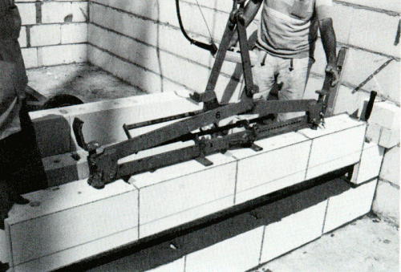
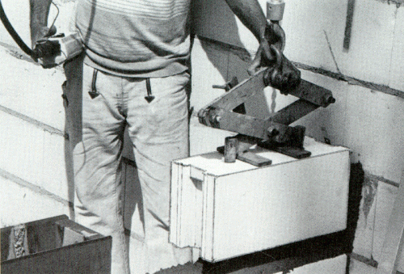
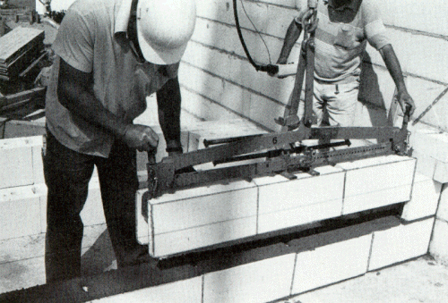

Mauersteine, die für das Versetzen mit Versetzgeräten oder -maschinen vorgesehen sind, müssen für diesen Zweck durch geeignete Formgebung, die ein einfaches und sicheres Erfassen von einem oder gleichzeitig mehreren Steinen mit dem Versetzgerät ermöglicht, vorbereitet sein. Dies gilt insbesondere für die Anordnung von Dornlöchern und die Gestaltung von Greifzangen (siehe Bilder 12, 13 und 14).


